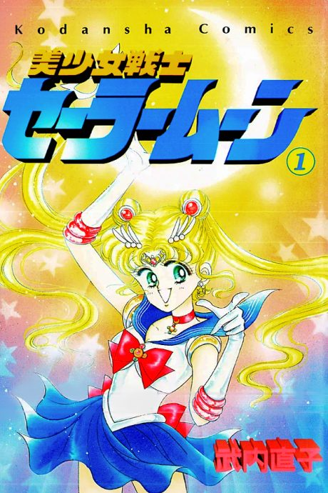

Sailor Moon
美少女戦士セーラームーン
The anime covers the whole manga.
7.6AniList score
—Animeter, no votes yet
200episodes, 5 seasons
Rate it or report where you stopped
5 seasons, 200 episodes
In airing order. Episode numbers on this site count straight through every season, so season 2 starts at episode 47.
1
1992 · TV
Sailor Moon
Episodes1–4646 ep
2
1993 · TV
Sailor Moon R
Episodes47–8943 ep
3
1994 · TV
Sailor Moon S
Episodes90–12738 ep
4
1995 · TV
Sailor Moon SuperS
Episodes128–16639 ep
5
1996 · TV
Sailor Moon Sailor Stars
Episodes167–20034 ep
Sources: AniList